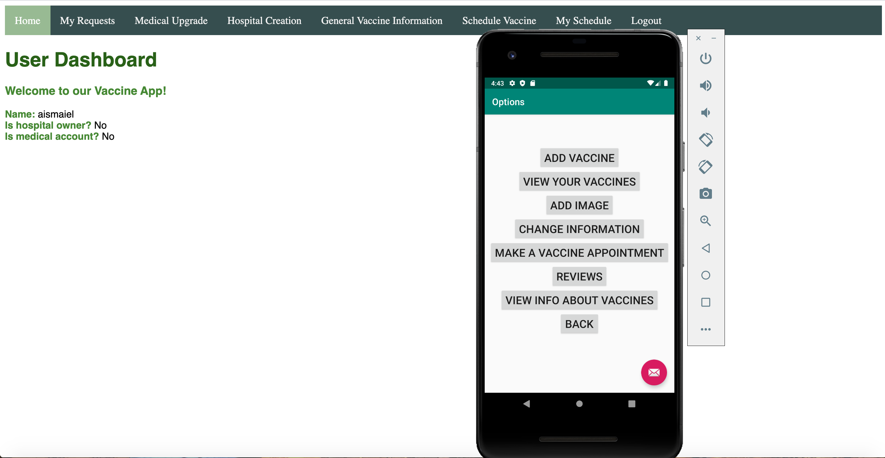
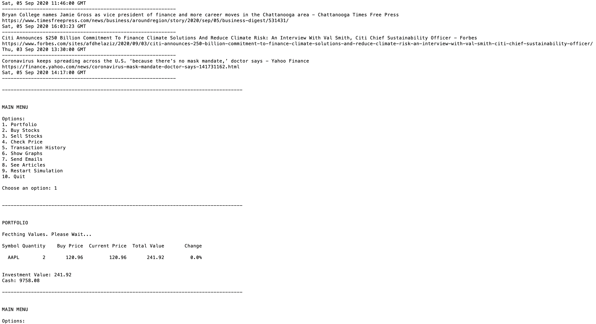
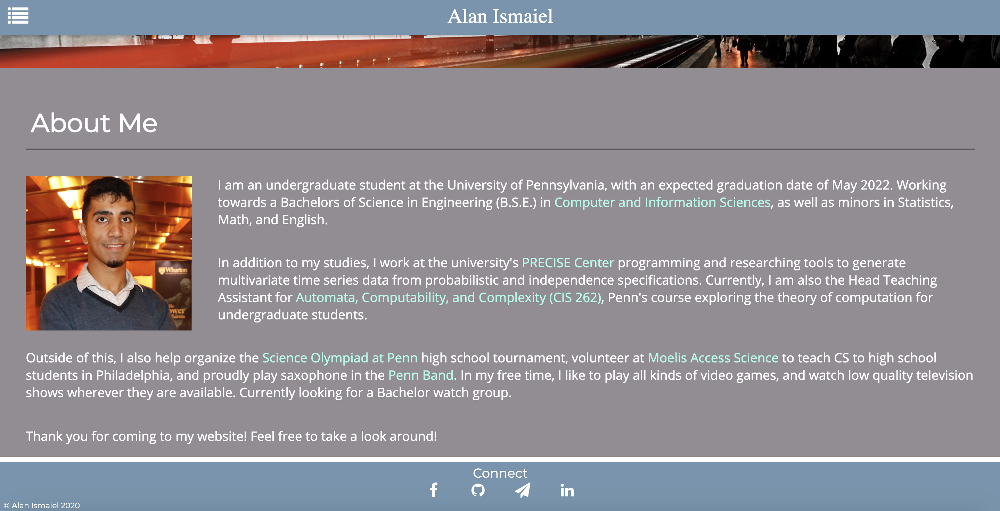

Projects
Vaccine Scheduling Application (Web & Mobile)
This project integrated web and mobile application design to create a tool for getting reliable information on vaccines—published by certified medical staff—and for signing up for vacinne appointments in registered hospitals. Stores all user and hospital information in a cloud database. Remotely developed with Ali Mohammad and Morgan McLees.
Over 2000 lines of code. Uses Java, JavaScript, Node.js, MongoDB, XML, HTML, CSS and Android Studio.
Stock Market Simulator
This project is a command line script allowing users to locally simulate a stock portfolio. Uses the Yahoo Finance API, as well as HTML/XML scraping to gather current stock prices, trending articles, and other information. Remotely developed with Henri Lim and Mitchell Poynter.
Over 600 lines of code. Uses Python (various packages), and Unix.
Personal Website
The website you're on right now! Will be continually updated as I improve as a programmer, and have more to show off.
Over 500 lines of code and counting. Uses HTML, CSS, and JavaScript.
Data Generation Tool
The ongoing progress of my research in the PRECISE Center. Using cutting-edge Mathematica functions to generate realistic time series data. Remotely being developed with Jason Shu and Dr. Ivan Ruchkin.
Over 500 lines of code and counting. Uses Mathematica.
Additional
The following projects are school projects and thus privately sourced:
• A Paint application written in OCaml
• A Twitter clone written in Python using Django
• A data analysis application using Java and OpenPhillyData data sets